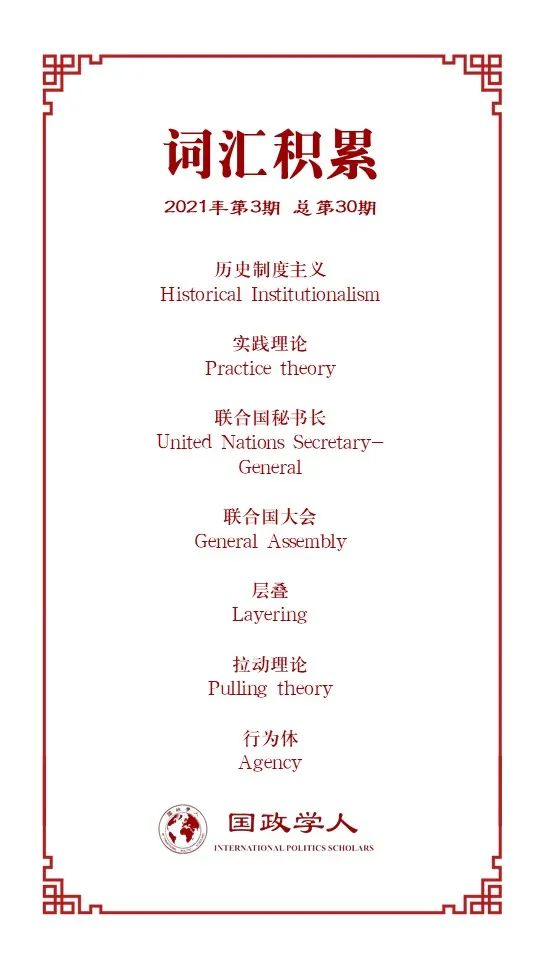

收录于合集 #理论研究 96个

作品简介
【作者】 Vincent Pouliot，麦吉尔大学教授，研究兴趣主要为国际组织政治社会学、全球治理与全球政策制定、全球历史社会学、多边外交、国际关系与社会理论。
【编译】 池佳曈（国政学人编译员，吉林大学行政学院）
【校对】 杨朔
【审核】 晋玉
【排版】 韩柯
【美编 】杜丛竹
【来源】 Pouliot, V.Historical Institutionalism Meets Practice Theory: Renewing the Selection Process of the United Nations Secretary-General. International Organization , 2020, 74(4), 742-772.
【归档】 《国际关系前沿》2021年第3期，总第30期。
期刊简介
《国际组织》（International Organization），简称“IO”，是一份经过同行评议的季刊，涵盖包括外交政策、国际关系、国际与比较政治经济学、安全政策、环境争端与解决、欧洲一体化、联盟模式与战争、谈判与冲突解决、经济发展与调整、国际资本流动等在内的多个国际事务领域。该刊成立于1947年，由剑桥大学出版社代表国际组织基金会出版，主编为乔治城大学的Erik Voeten。根据Journal Citation Reports显示，2019年其影响因子为5，在95种国际关系期刊中排名第2。
历史制度主义与实践理论结合——联合国秘书长选拔机制的变迁 ****
Historical Institutionalism Meets Practice Theory:
Renewing the Selection Process of the United Nations Secretary-General
Vincent Pouliot
内容提要
联合国任命古特雷斯为秘书长的过程是世界政治中前所未有的，例如增加了候选人举行公开听证会的环节。这一制度的发展被历史制度主义称为“层叠”(layering)的教科书式案例， 其聚焦时机、形式、限制这三项有价值的争议。 本文借鉴历史制度主义和实践理论，提出行为体的“拉动”(pulling)理论。文章推断出三种机制——关系交叉(relational crossover)、能力转移(competence transfers)、回推(pushback)， 并展示了一系列联合国在2015-2016年期间新出现的做法， 以解释最近的秘书长选拔程序的细节。文章认为2016年开始的变化正逐渐扩散到联合国其他机构和联合国之外的组织，从而逐渐改变成员国的政治计算和期望，并可能赋予国际公务员更多的权力和能见度。
文章导读
2016年10月古特雷斯被任命为联合国秘书长，联合国与十几名候选人组织了公开听证会，并推出了直接向候选人提问的网站。此外联合国安全理事会主席与联合国大会主席还签署了一封罕见的联名信以事先确定选拔程序。这一过程被历史制度主义称为“层叠”，即在现有规则之上或沿此方向引入新规。作为一种机制变革形式，层叠在国际组织内部尤其普遍。
文章追求两个目标。理论层面，作者意图发展行为体的“拉动”理论，这一框架有助于理解机制变迁的社会性质以及行为体在社会环境中的基础作用。该理论认为社会行动不仅由利益驱动，也受到其所在的实践网络影响。经验层面，作者试图阐述当代世界政治机制变革的一个典型案例。此外，新的选拔方式已经开始扩散至其他组织，改变了全球治理的政治格局。以此为基础，作者阐述了从行为体的拉动理论中衍生的三种因果机制，其中涉及层叠的时机、形式与幅度。文章认为联合国的做法为当前机制提供恰当解释，并为2016年联合国秘书长选拔过程的变迁创造了三种有利条件： （1）竞选者与现任者之间的关系交叉；（2）使非正统做法合法化的能力转移；（3） 减缓交叉和转移的回推工具。 作者利用以上机制解决三个经验层面的难题。首先，为何在早期已经出现改革的呼声，但直到2016年才发生改变？第二，为何采取此种形式而非他种？第三，如何解释变革被限于选拔的最后阶段？在理论发展的目标指导下，作者采用了一个行为体变革的关键案例，以摆脱抽象、创造之后可能被嵌入其他单一的因果分析的概念。
01
阐释层叠：走向行为体的拉动理论
行为体的拉动理论与历史制度主义的路径依赖本体论相一致，有助于解决机制变迁过程中意向主义重视的问题。行为者追求自身利益，但不断发展的社会环境、围绕行为者的实践网络决定了层叠的过程与结果。推动和拉动的比喻来源于马克思·韦伯，他认为行动是利益驱使的。这种根据行为体内在动机解释其行为的理性选择方法主导了当今社会科学。作者认为行为体同样被所在的社会环境拉动，一系列实践构成机制，并在行为层面维持其存在。
（一） 行为体的意向主义理论及其局限性
近几十年来，历史制度主义学者为解释机制建立后的演变，建立了充满活力的研究计划。以层叠为例，在以下情况下最为常见：（1）强烈的否决可能性；（2）解释与强化规则的低水平自由裁量。这一框架结构未能完全解释变革的动力，尤其是行为体在其中的作用。为解决这一问题，学者们采取了不同版本的理性选择制度主义。伊肯伯里(Ikenberry,2001)认为国际制度是霸权利益的反映，其他学者则将软理性主义与基于心理学和认知科学的观点相结合。理论层面，将意向与行为体等同使得研究机制变迁十分困难。经验层面，推动理论经常忽视影响行为体追求利益方式的社会因素。行为体的意向主义理论主要有以下两点局限性：第一，缺失机制变迁的深层互动动力。尽管在机制建立的过程中存在意向性，但机制变革更在于关系过程，因此微观层面维持个人偏好和宏观层面的机制变革没有直接联系。第二，难以具体说明机制变更的形式。因为实现相同偏好的方法多种多样，意向主义理论更容易解释为何行为体寻求变革。在本文的案例中，挑战者对提高透明度有共同兴趣，而现任者则倾向于维持现状。机制提供规则，但规则存在歧义，因此行为体的推动理论需要新的框架进行补充。
在机制变迁的研究中，意向主义理论的双重局限引发三种困惑：第一，为何变化在特定时刻发生？第二，为何以特定途径发生？第三，为何变化未更进一步？现任者与挑战者之间的斗争是利益表达的核心，在密集的社会关系中展开。
（二）解释拉动：实践网络及其可供性
行为体的拉动理论是对推动理论的补充，它解释社会行动而非诉诸意向。作者将施动者分为挑战者与现任者，目前五大常任理事国是现任者，希望保持对提名进程的控制，活跃的成员国和非政府组织是主要挑战者，致力于提高透明度。实践是集体的行动模式，单一行为体无法完全控制，因此实践网络起到赋能与制约的双重作用。在任何时候行为体演变的实践网络都存在可供性，使得一些行为更具可能。
理论层面，行为体拉动理论的关键价值在于其将社会影响内生为行为体的一部分，这对于历史制度主义及其路径依赖的概念至关重要，需要考虑行为体受机制限制的程度。拉动理论中，机制通过实践成为行为体的一部分。
实践网络的可供性不仅取决于行为模式，也取决于叙事方式。作者认为变革机制的一个关键挑战是将非正常做法合理化，并称之为叙事性工作能力转移。在一定范围内，叙事方式可能促成实践网络的转变，这种转变往往以下述案例中所述的复杂政治工作为代价。
02
实操：难题、机制与方法
为应用行为体的拉动理论，文章推断出三种因果机制以解决层叠的难题：时机、形式、幅度。其解释逻辑为，给定相对恒定的权力与偏好结构，在既定结构下运转的实践既限制机制变迁又使其成为可能。分析层面的挑战是展示实践网络如何提供决定取得机制成果的行动。经验层面作者确立了三种实践，这些实践是2015-2016年革新联合国秘书长选拔过程的关键。
第一，在偏好和权力分布稳定的情况下，挑战者如何引发机制变革？拉动理论认为在实践使得挑战者和现任者之间发生关系交叉（跨单位社会联系产生）时，机会之窗便会打开。在结构受阻的情况下，挑战者利用实践产生新的联系，继而产生向现任者转变的可能性。当社会环境中现存的做法促进有政治影响群体的关系交叉时，机制变革更易发生。
第二，挑战者为何在争取机制变革过程中采取特定行为模式？在拉动理论中，渐进变革的特定形式来源于可得的行为方式。行为体在实践网络的基础上通过叙事促进非正统方式的合法性。变革从现有实践开始，界定了一系列与历史制度主义关于路径依赖的假设相符的可能性。行为体为诉诸其社会环境中的现存实践影响机制变革。这一机制补充推动理论，即行为体通过将合理的选择分类、定义理性手段的作用范围，追求与其偏好相一致的变革。
第三，如何解释变革的幅度？行为体的拉动理论表明渐进的变革受到现有措施的影响，可用以限制挑战者。机制现状的维持者通常采取行动减缓、引导或停止变革。这一机制表明，机制变化的程度取决于现有社会环境中现任者如何进行动员、维持现状。当权力和机制规则的分配保持稳定时，扩大政治斗争的具体手段所产生的影响尤为重要。
方法层面，作者解释了行为体拉动理论的有效性，展示2015-2016年联合国网站提供的实践如何影响机制变革。作者主张大多数行为既被利益推动，又受到实践网络的拉动。经验层面，行为体采取的做法在不与其偏好相违。作者认为2016年的变革主要受到三个因素影响：（1）挑战者起步早；（2）大会主席发挥强有力领导作用；（3）民间社会动员。这三个因素十分重要，但在分析层面明显存在不足，因此作者进一步论证这些因素如何发挥作用。
03
联合国秘书长选拔程序的变迁
作者认为，联合国秘书长选拔程序的变迁具有极其重要的政治意义。第一，联合国秘书长是全球治理中最重要的行为体之一；第二，这一职位具有重大政治影响；第三，对全球治理有重要溢出效应；第四，更新了包括五常在内的联合国成员国在秘书长选拔过程中的政治考量。2016年联合国任命古特雷斯的过程发生重大变革，总共有十几名候选人被提名，这是联合国历史上最长的候选人名单。
（一）时机：提供相关交叉的实践
2015-2016年，挑战者与现任者之间新的社会联系的产生增强了机构变革的压力，这种关系交叉削弱了结构约束的权重，增加了挑战者的机会。在前两次任命中，联合国大会通过了要求变革的决议但未能成功实现，因此本次联合国采取三种做法。第一，联合国大会主席和安全理事会主席发表联名信的做法使得大会主席能够带头进行变革。第二，组建“朋友圈”的做法促进了关键挑战者群体的动员。第三，混合专家咨询组扩大了活跃成员国、非政府组织、其他利益集团包括与五常之间的联系。这些做法产生了决定性的关系效应，在解释革新的时机方面有重大作用。
**
**
（二）形式：提供能力转移的做法
挑战者调动了一种关于“最佳做法”的叙述，将联合国其他部门适用的能力标准迁移至秘书长的甄选过程，推动联合国新运作模式的产生。此外，挑战者还借鉴了全球治理的非正统做法，如公开听证会和世界范围内的调查。自2006年任命联合国秘书长以来，这三种做法在联合国内部更加常见。
（三）幅度：提供回推的实践
虽然2015-2016年推动联合国秘书长选拔进程的革新一事并未在明面上受到阻拦，但在此过程中一些安理会成员对开放程序和削弱其历史特权感到不安。安理会在秘书长提名过程中的重要作用受联合国宪章规定，回推的关键还在于其程序的适应性与灵活性。安理会成员采取三种运作模式以限制变革的幅度：非公开会议、非正式民意测验、非正式文件。尽管早期阶段出现良好势头，但由于安理会的严格掌控，最终推选和任命的过程都只能与前期相似，由新程序获得的透明度不能发挥最大作用。
04
结论
机制发展的过程是世界政治中不可或缺的方面。由于层叠的普遍性，国际组织进行小规模机制改革相对容易。结合历史制度主义和实践理论的主张，能够开发出更有效的分析工具。行为体的拉动理论为国际关系中普遍存在的机制变革的意向主义描述提供必要补充，挑战者和现任者持有的偏好解释了其在这一过程中的立场。然而，这些因素不能充分解释机制变革的时机、形式与幅度。总之，不了解联合国的实践网络如何进行创新，就难以全面理解联合国秘书长选拔过程的变迁。显然，现在判断联合国作为一个整体是否改变为时尚早，但2016年开始的变化正扩散至其他联合国机构和联合国以外的组织，逐步改变成员国的政治期望，并可能赋予国际公务员更多权力与能见度。最终，机制的未来取决于各行为体如何在联合国实践网络的拉动下相互斗争。
译者评述
按照惯例, 联合国秘书长一般由安理会提名，联合国大会以多数票确认最终提名。一直以来联合国秘书长一职的选择都是非常政治化的过程，2016年联合国秘书长的选拔首度采取公开方式进行。本文在理论层面借鉴历史制度主义和实践理论，提出行为体的“拉动”理论，即行为体不仅受利益的驱动，也受到机制的影响。行为体的拉动理论为国际关系中普遍存在的机制变迁的意向主义描述提供必要补充，挑战者和现任者持有的偏好解释了其在这一过程中的立场。文章推断出时机、形式、幅度三种因果机制，以解决层叠的难题。实证层面，文章通过列举在2015-2016年存在但在之前未采取的做法，阐释联合国秘书长选拔程序变迁的细节。作者最终得出结论，认为2016年开始的变化正扩散至其他联合国机构和联合国以外的组织，逐步改变成员国的政治期望，并可能赋予国际公务员更多权力与能见度，进而改变全球治理的格局。国际组织是参与全球治理的关键行为体，理解国际组织自主性是分析国际组织如何影响全球治理议程的核心。国际组织的运作程序大多数情况下受到政治博弈的制约，在自主性方面有所欠缺。文章将历史制度主义与实践理论相结合，进行“拉动”理论的创新，对于拓展国际组织理论的发展空间、促进国际组织公开化与民主化具有重要指导意义，进而为全球治理的发展变革提供动力。
词汇整理

文章观点不代表本平台观点，本平台评译分享的文章均出于专业学习之用, 不以任何盈利为目的，内容主要呈现对原文的介绍，原文内容请通过各高校购买的数据库自行下载。
好好学习，天天“在看”
国政学人
支持学术公益与知识传播
微信扫一扫赞赏作者 __赞赏
已喜欢，对作者说句悄悄话
取消 __
发送给作者
发送
最多40字，当前共字
上一页 1/3 下一页
长按二维码向我转账
支持学术公益与知识传播
受苹果公司新规定影响，微信 iOS 版的赞赏功能被关闭，可通过二维码转账支持公众号。